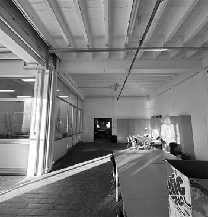
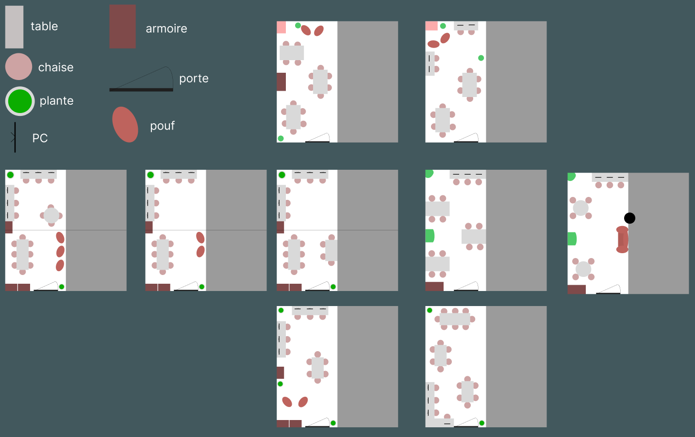
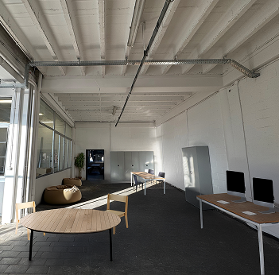
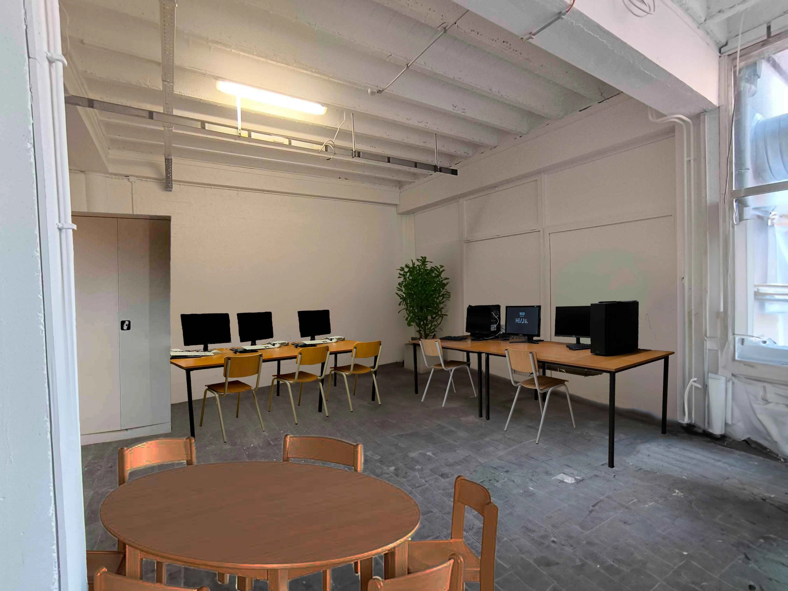

1. Le Contexte
Dans le cadre de mon TFA, j’ai dû réfléchir à la conception d’un site autour d’une technologie actuelle appliquée dans un futur proche. L’objectif : réfléchir à une innovation plausible, mais aussi anticiper ses impacts qu’ils soient positifs ou négatifs. Je me suis intéressé aux drones, en particulier à leurs possibilités d’évolution dans des milieux naturels protégés. J’ai imaginé une histoire autour de drones biomimétiques en forme d’oiseaux.
2. Le concept
SkyGuard met en scène une mission de secours fictive, menée en 2035, dans une région vallonnée voire montagneuse protégée. Une personne a disparu, et les secours déploient des drones silencieux, autonomes, volants en essaim, conçus pour :
- reproduire le vol naturel des oiseaux via des ailes battantes;
- se recharger en vol grâce aux courants ascendants;
- transmettre des données en temps réel aux équipes au sol
Le récit permet de critiquer la technologie autant que de la valoriser : les capteurs thermiques sont imparfaits, les habitants du village sont méfiants, et même la personne recherchée prend peur en voyant ces «oiseaux» tourner autour d’elle.
4. Répartition des tâches
Afin de rendre notre travail plus efficace, il a été décidé avec les autres groupes de nous répartir l’espace du local. Le premier groupe travaillera sur le design des portes, le deuxième aménagera le petit local (A083) et le coin fenêtre, et le troisième groupe s’occupera de la décoration des murs. Quant à notre groupe, il va s’occuper du reste, c'est-à-dire l’aménagement de la longueur de la salle. Il a aussi été décidé que tous les groupes resteront "en contact" tout au long du projet. Cela va permettre de conserver un style cohérent, notamment au niveau des couleurs du mobilier et des murs.

Pendant la répartition des tâches (qui s’est faite en même temps qu’une nouvelle visite du A083), différents groupes en ont profité pour faire des photos et prendre les mesures approximatives du local. Ces photos ont été mises en commun pour que chaque groupe puisse en profiter. Pour nous faire une idée du matériel à placer et de la manière dont nous allons le disposer, Hasan a réalisé un modèle 3D de la salle en utilisant Spline 3D. Cela nous a permis de tester rapidement différents designs et de mieux visualiser notre projet.
5. Quelques plans et photos modifiées
Différents plans en vue de dessus ont été réalisés (sur Figma), en variant la disposition du mobilier. Ces plans ont ensuite été proposés au reste de la classe, ce qui a permis de recueillir des retours sur l’agencement jugé le plus cohérent en fonction de l’espace disponible. Le plan qui a été retenu (le plus à gauche sur la photo ci-dessous) allie un coin détente (avec des poufs) et une zone de travail (où des ordinateurs sont mis à disposition des élèves). Des tables sont aussi disposées dans la salle pour offrir un endroit de travail ou de divertissement.
Adrien et Maxime ont continué de modifier les photos, en les adaptant au plan qui a été retenu par les autres membres de la classe. Ces photos retouchées (montrant les meubles et leur disposition) nous permettent de nous projeter dans le futur et de voir la classe une fois aménagée.
 6. Une étude de marché
Étant donné que l’école n’a pas de poufs, il a fallu, sur les conseils de Mr Selamet, réaliser une petite étude de marché. De cette manière, la direction verra le budget qu’il faudra allouer à l’achat de ce matériel supplémentaire (si elle le juge nécessaire). Pour avoir une idée du prix d’un pouf, il a été décidé de consulter le marché du neuf et de l’occasion.
La question des plantes s'est également posée. En effet, le local accueille déjà une plante, mais il semble qu’elle ne soit pas en pleine forme. Dans notre réflexion, nous pensions la remplacer par des plantes artificielles pour limiter la demande en entretien. Mais là aussi, il faut faire une étude de marché.
7. Le code
Une fois toutes ces étapes réalisées, chaque membre du groupe à du réaliser son propre site, avec son propre style graphique (seul le contenu textuel a été réalisé en groupe). C'est cette partie qui a prise le plus de temps. En effet, il a fallu penser à la manière de présenter le contenu, afin de le rendre intéresssant pour vous. Heureusement pour moi, je n'ai pas eu trop de difficultés lors du codage. Les parties les plus difficies ont sans doute étées la réalisation de la barre latérale de navigation, ainsi que les animations.
9. Conclusion
Ce projet a montré que la répartition des tâches (interne dans le groupe de 5 mais aussi avec les autres groupes) est un point primordial pour garantir une progression rapide et structurée. Les mises en commun avec les autres groupes sont aussi importantes car elles permettent de voir si tout le monde a bien la même compréhension des besoins des étudiants. Faire des plans 2D et 3D de la salle a permis d’explorer de nombreuses possibilités de manière simple et rapide. Enfin, il est important de toujours garder en tête les besoins des étudiants et d'anticiper le budget nécessaire à la réalisation du projet.